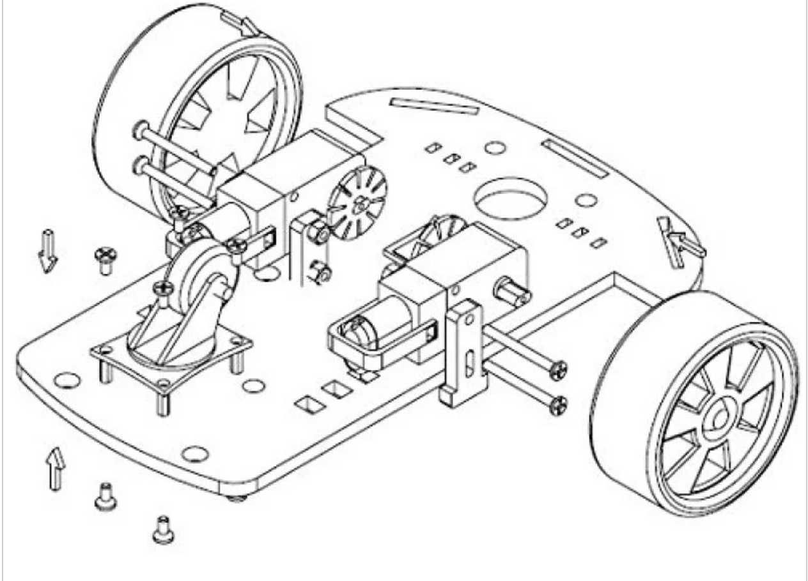

Base Kit Assembly
Assembling Your Maker Pi RP2040 Robot
This kit is a $25 robot kit that we will use in our CoderDojo robotics classes. This kit includes:
- A SmartCar Chassis
- Two 3 to 6-volt DC geared hobby motors and wheels
- Plexiglass (acrylic) main-board
- Screws and nuts
- 4 AA battery pack
- Power switch
- Cytron Maker Pi RP2040 kit
- Maker Pi RP2040 board
- 4x Grove to female header cables
- Screwdriver
- Silicone rubber feet (pack of 4)
- Ultrasonic sensor
- mounting bracket
- 2 M2 6mm screws and nuts
You will need to provide 4 AA batteries and a Micro USB connector that works with your PC or Mac.
Assemble the SmartCar Chassis
Robot configured with Time-of-Flight distance sensor.

Here is the bottom view of the robot with the batteries mounted on the bottom.

In this version of the kit, the wires are pre-soldered onto the motors.
Parts in Packages
Here is the robot kit in all the packaging:

Parts Check
Your first task is to remove the protective backing from the Plexiglass body.

Here are all the parts removed from the packaging:

Exploded View
Here is an exploded view showing how the motors are connected: 
Wires on Motors
We mount the motors with the wires on the inside and the heads of the bolts on the outside.

This photo shows cable ties I have added so that the wires don't get pulled out by our students. These cable ties are optional.

Battery Pack on Bottom
We like to mount the battery pack on the bottom. This leaves more room on the top for customization and a breadboard.
Next, we position the battery pack on the BOTTOM so that we have more room on the top for our circuit board, sensors and add-on displays.
The rear of the robot with battery pack mounted.


Mounting the Drag Wheel
Next, we put the four screws and spacers in the four holes at the bottom rear of the robot directly behind the battery pack.
We then add the four screws to mount the drag wheel.
Standoffs

Drag Wheel on Standoffs

Next, line up the printed circuit board with the USB connector facing the rear. Note where the holes are in the board and drill two 1/8" holes to mount the board.

I used a 1/8th inch drill bit to put holes where the battery pack should be mounted.
Next, I put the flat-head screws in the battery pack. We want to make sure the top of the screw is all the way in so that it does not get in the way of the battery.
Optional Power Switch
The Cytron board has its own power switch. So this switch does not need to be used.

Mounting Cytron Board


Next, we mount the rubber feet on the bottom of the Maker Pi RP2040 circuit board so that we have some space between the PC board and the main chassis. I use the space next to the four corners to mount the feet. Note that we must put the drag wheel on before we put the PC board on top of the chassis.
Now is a good time to check the spacing of the battery pack and the read drag wheel. The rear drag wheel must be able to spin freely in a full circle without bumping into the battery. If it bumps you might need to remount the battery pack before you proceed to the next step.
This figure has the switch that comes with the battery pack. For our work, we will not need this switch since the Maker Pi RP2040 circuit board has an no-board power switch. Most of our students put the switch in if they ever need to change circuit boards that don't have a built-in power switch. If you do this, you can solder the switch between the red power of the battery and the positive terminal of VIN.
This photo shows the holes drilled with the screws in them.
This is the side view from the rear of the screws holding on the circuit board.

Next use two 6 mm M3 screws to mount the ultrasonic distance sensor on top front of the robot.
Some of our students like to mount the ultrasonic sensor under the chassis and point the sensor up a little so the sensor does not reflect off the floor. You can use a heat gun to soften the plastic mount to change the angle.
Next, I added a drop of hot glue under the front screws that mount the pc board. I did this because the battery pack and motor mounts get in the way of adding a nut under the board.
I used a small rubber-coated twist tie to keep the wires under the robot away from the wheels and battery. We don't want them to drag on the floor.
Next, we connect the motors to the screw headers on the printed circuit board. There is a screwdriver that comes with the Cytron Maker Pi RP2040 that is handy for tightening the screws.
Don't worry about getting the connections all correct. They can be adjusted in your software.
Press the wheels on the motors.
Lastly, we connect the battery to the VIN jumper, making sure to connect the red wire to the "+" terminal and the black wire to the "-" terminal.
Connect the Maker Pi RP2040 board to the top with the USB connector facing the rear.
Next, we put the four screws and spacers in the four holes at the bottom rear of the robot directly behind the battery pack.
Motor and Power Connections
Connections of the two DC motors and 4AA battery pack:

LiPi battery connection:

Wire Management

We then add the four screws to mount the drag wheel.
Here is a short video of the assembly of a SmartCar Chassis. Note that this video puts the battery on the top, where we put it on the bottom.
There are many videos online how to assemble to motors to the chassis. The trick is orienting the motors correctly and making sure the bolts don't get in the way of the wheels.